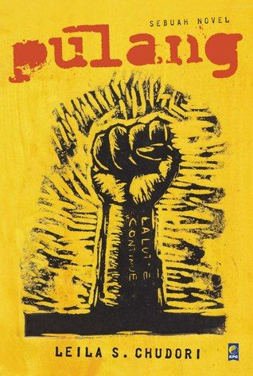

Penulis: Andrea Hirata
Penerbit: Bentang Pustaka
Tahun Terbit: 2005

Penulis: Pramoedya Ananta Toer
Penerbit: Lentera Dipantara
Tahun Terbit: 1980

Penulis: Leila S. Chudori
Penerbit: Kepustakaan Populer Gramedia (KPG)
Tahun Terbit: 2012

Penulis: Butet Manurung
Penerbit: INSIST Press
Tahun Terbit: 2007

Penulis: Agustinus Wibowo
Penerbit: Gramedia Pustaka Utama
Tahun Terbit: 2011